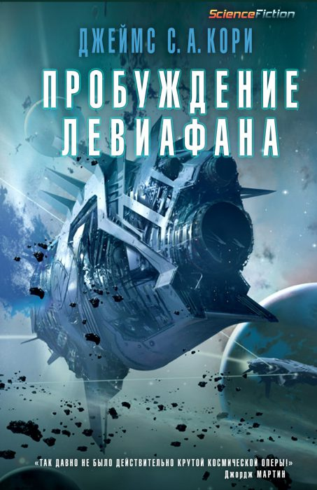
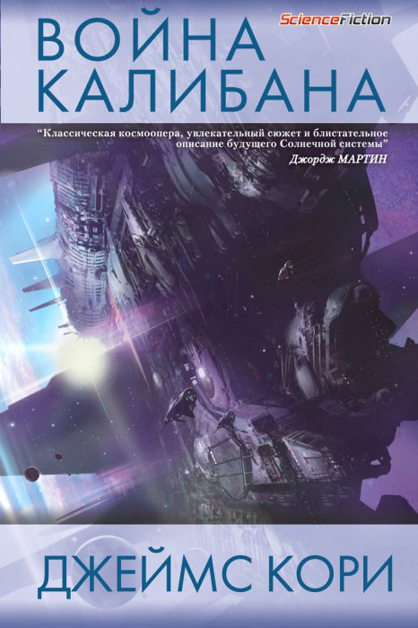
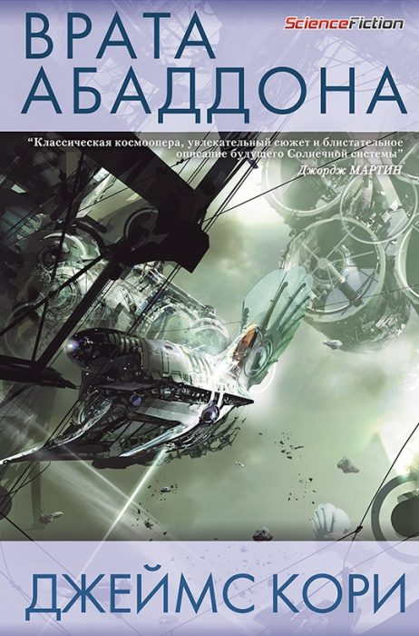
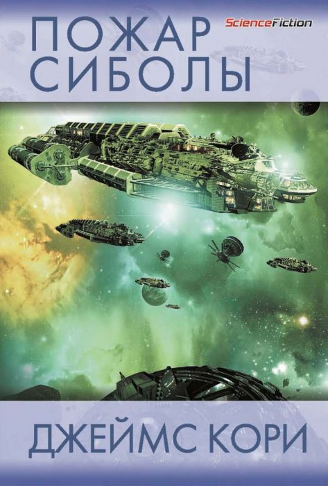
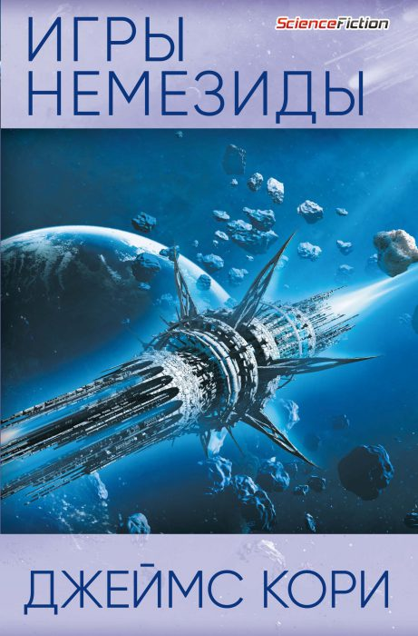

Пробуждение Левиафана

Аннотация:
Человечество успешно колонизировало Солнечную систему. Марс, Луна и
Пояс Астероидов уже заселены, но звезды по-прежнему таят немало
опасностей.
Водовоз "Кентербери", транспортирующий лед из колец Сатурна к станциям
Пояса Астероидов, во время очередного рейса засекает сигнал бедствия
от корабля "Скопули". Прибыв на место, экипаж "Кентербери" не
обнаруживает на его борту ни одной живой души. Хуже того, спасательная
миссия неожиданно превращается в гонку на выживание. Капитан Джеймс
Холден и уцелевшие члены его команды становятся обладателями
смертоносной тайны.
А на станции Церера в Поясе Астероидов детектив Миллер начинает поиски
пропавшей девушки. Расследование приводит сначала к "Скопули", а
дальше - к Джеймсу Холдену. Исчезновение Джули Мао становится ключом к
разгадке чудовищного преступления, заказчики которого не постесняются
развязать полномасштабную войну между Землей и Марсом, чтобы достичь
своих целей.
Война Калибана

Аннотация:
На Ганимеде, кормящем внешние планеты, марсианская десантница видит,
как ее отряд уничтожает ужасный суперсолдат. На Земле,
высокопоставленный политик старается предотвратить возобновление
межпланетной войны. На Венере, инопланетная протомолекула наводнила
планету, провоцируя огромные изменения, и грозит распространиться по
всей солнечной системе.
В глуши космоса, Джеймс Холден и команда корабля “Росинант”, помогают
Альянсу Внешних Планет поддерживать мир. Когда они соглашаются помочь
ученому обыскать раздираемый войной Ганимед, в поисках пропавшего
ребенка, будущее человечества зависит от того, сможет ли один корабль
остановить вторжение, которое уже началось…
Врата Абаддона

Аннотация:
На орбите Урана неожиданно появляется гигантское нерукотворное
образование в форме кольца, которое приковывает к себе всеобщее
внимание. Однако любопытство сменяется настоящей паникой, когда в
загадочном Кольце бесследно исчезает космический корабль. Куда он
подевался? Что явилось причиной подобной аномалии? И что же на самом
деле находится по другую сторону этих адских врат? Ученые, журналисты
и военные с Земли и Марса направляются к Кольцу, чтобы исследовать
таинственный объект. Среди прочих судов этой обширной флотилии
оказывается и «Росинант» под командованием Джеймса Холдена. В то время
как посланники человеческой расы пытаются определить, открывает ли
Кольцо новые возможности или таит в себе угрозу, Холдену предстоит
столкнуться с куда более серьезной опасностью…
Пожар Сиболы

Аннотация:
Открытие порталов, так называемых врат, повлекло за собой массовую
колонизацию новых миров. Тысячи людей устремились на поиски лучшей
жизни. Однако независимым переселенцам пришлось столкнуться мощной
корпорацией, получившей лицензию на изучение неизведанных территорий.
На далекой планете Илос разгорелась настоящая война, грозящая
распространиться до самой Земли. Джеймсу Холдену и команде его корабля
«Росинант» поручено отправиться на Илос и попытаться остановить
кровопролитие. Но чем больше Холден размышляет над происходящим, тем
сильнее ему кажется, что эта миссия обречена на провал. А тем временем
голос мертвеца сообщает ему, что великая цивилизация, некогда
обитавшая на этой планете, исчезла. И что она была безжалостно
уничтожена…
Игры Немезиды

Аннотация:
Открытие далеких миров повлекло за собой величайшую в истории
человечества экспансию. Искатели приключений тысячами отправляются в
путешествия на поиски лучшей жизни, а между тем основы власти в
Солнечной системе оказываются под угрозой. Многие корабли колонистов
исчезают без следа. Тайно формируются мощные военные силы. Последний
образец протомолекулы похищен. Атаки террористов держат в страхе
внутренние планеты. Грехи прошлого возвращаются, взыскивая высокую
плату. В то время как в огне и крови устанавливается новый порядок,
Джеймс Холден и команда «Росинанта» вынуждены бороться, чтобы выжить и
вернуться в единственный оставшийся у них дом.